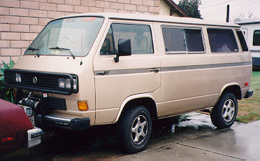
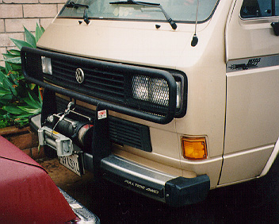
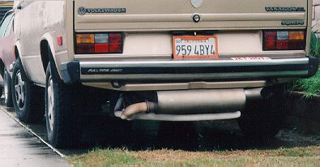
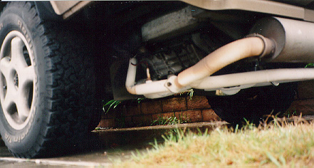

Notice the large wheels (215/75/15), which Mr. Schneider recommends for 911 conversions, especially if the VW transmission is kept. Of course, they also add desirable ground clearance.

A closer look at his brush-guard and electric winch. Small grills welded onto the guard help protect the headlights.

A look from behind reveals the "Sport Exhaust" taken off of a Carrera 911. Mr. Schneider says that the exhaust system which comes with the 911 conversion is several inches higher off of the ground than the system shown.

A closer look at the engine. The exhaust manifolds/pipes are apparently powder-coated in white.